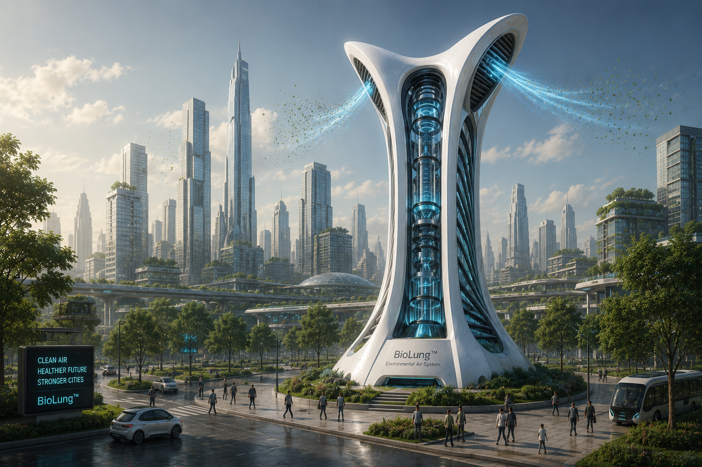
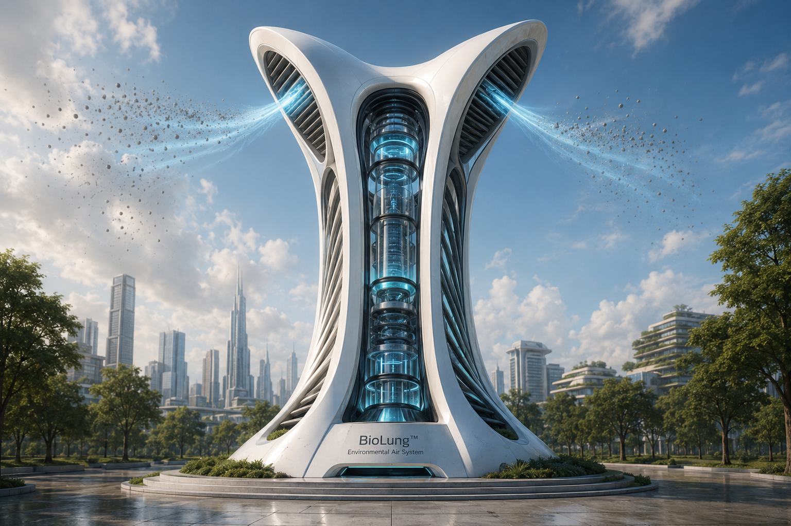
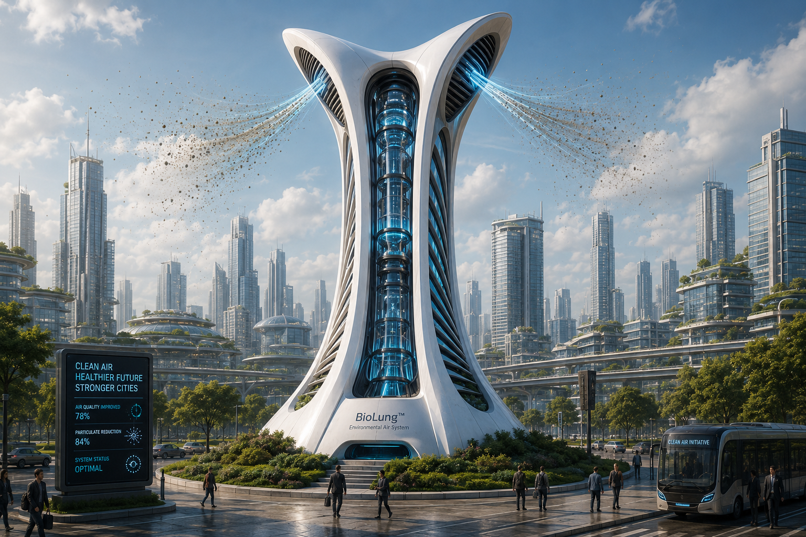
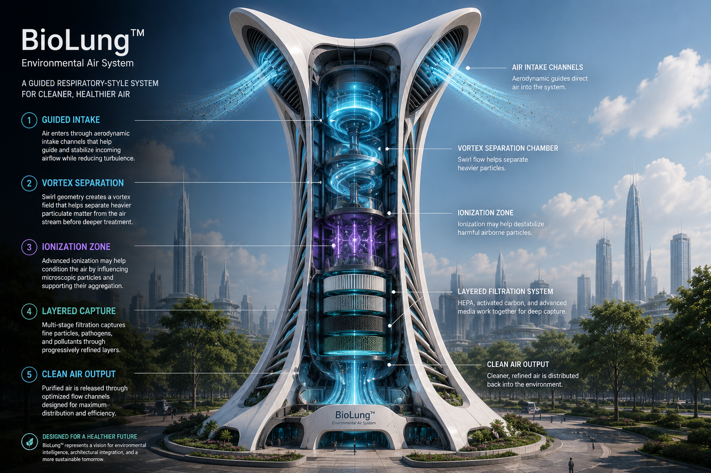
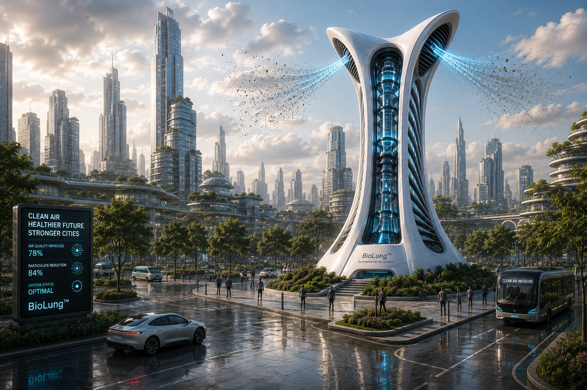
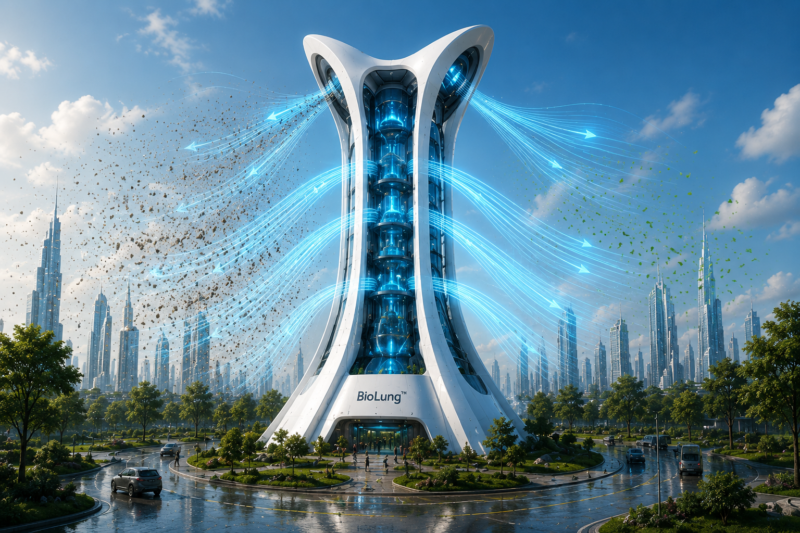
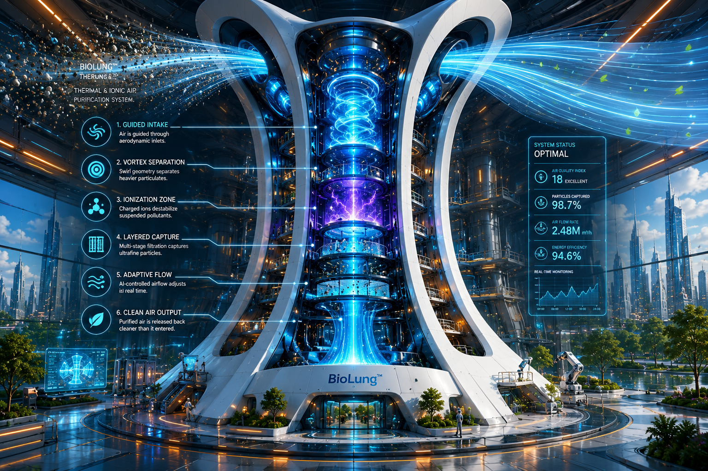
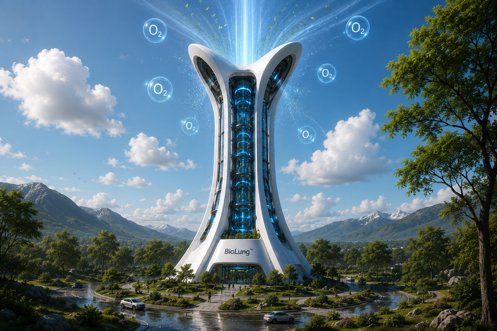
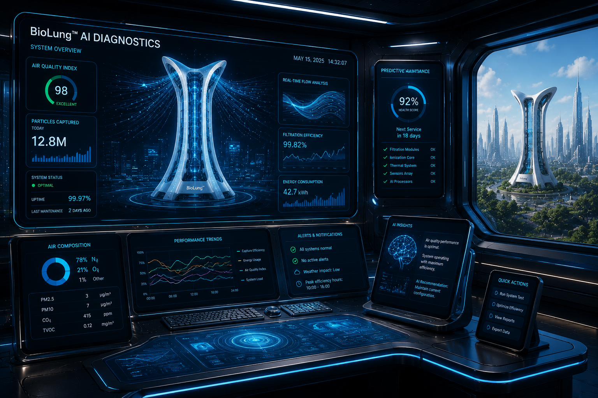

Guided Intake
Air enters through a controlled intake path designed to improve how contaminants move into the system.
Air Systems • Environmental Intelligence • Future Infrastructure
BioLung™ explores a future-facing environmental air purification architecture designed to move beyond passive box-style filtration. Instead of merely trapping airborne contaminants, the concept imagines a guided respiratory-style system that draws, separates, conditions, and refines air through a more intelligent flow path.

BioLung begins with a simple question: what if air purification behaved less like a sealed appliance and more like an engineered respiratory structure?
Most conventional air-cleaning systems follow a narrow path: pull air in, force it through filter media, and push it back out. That model works, but it is often reactive, visually uninspired, and limited in how it treats the dynamic behavior of particles and flow.
BioLung proposes a broader design language — one where intake, separation, ionization, and layered capture are treated as parts of an integrated environmental architecture.

BioLung is imagined as a breathing system for built environments — one that organizes, guides, and refines air through staged environmental logic.

Air enters through a controlled intake path designed to improve how contaminants move into the system.

Swirl geometry may help influence heavier particulate behavior before later treatment stages begin.

A conceptual conditioning phase may assist in destabilizing or influencing suspended contaminants in the flow path.

Multiple stages of filtration and capture create a more refined approach than one single barrier alone.

The conceptual system begins by drawing surrounding air into a controlled structure. Instead of relying only on brute-force filtration, the internal path is shaped to encourage directional flow and staged treatment.
In later phases, the geometry may support vortex-like behavior intended to influence heavier particulate matter. From there, the air can pass through conditioning and layered capture zones before cleaner output is released.
The result is a more architectural model of purification — one that treats air as a dynamic environmental medium rather than a simple stream passing through a disposable box.
Add your chosen concept animation, reference video, or future promo here.
BioLung can be imagined not only as a room-scale purifier, but as a broader environmental intelligence platform.




Clean air is one of the most important invisible foundations of healthy life, yet many environments still rely on narrow, low-imagination solutions. BioLung points toward a future in which air systems become more responsive, more architectural, and more integrated with the places people actually live and work.
The deeper value of the concept is not only filtration. It is system thinking. It asks whether air handling can evolve into a more elegant relationship between structure, motion, material, and environmental health.
BioLung™ is part of a larger HaloCyberLife exploration into future systems, environmental intelligence, speculative engineering, and architecture designed to serve life more deeply.